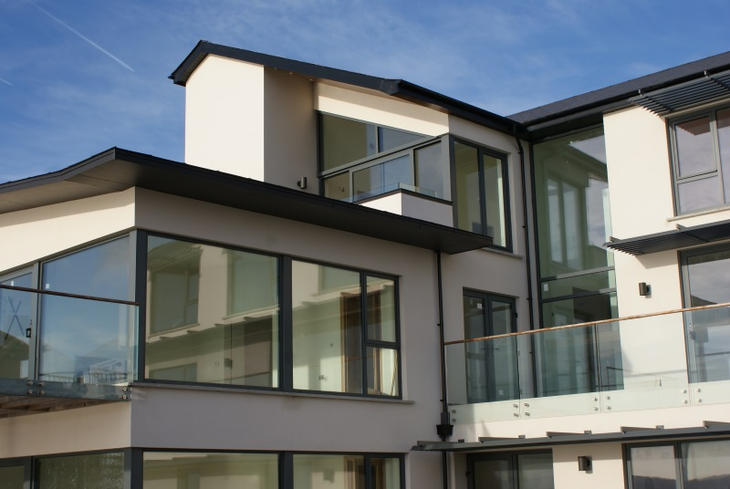

OUR SERVICES
Aluminium Windows & Doors
Glazing shaped around your building.
Discuss aluminium windows & doors ↗
Let’s work through
the details.
The company supplies and installs aluminium windows and doors for domestic and commercial buildings. Discuss the design, finish and application with the team.